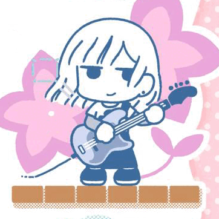

Anime!
主页
排行榜
十月新番
孤独摇滚
灵能百分百 第三季
死神 千年血战篇
黄金神威 第四季
向山进发 Next Summit
Do It Yourself!!
间谍过家家 第二部分
电锯人
秋叶原冥途战争
剑风传奇 黄金时代篇
福星小子
入间同学入魔了 第三季
JOJO的奇妙冒险 石之海 Part.2
恋爱FLOPS
机动战士高达 水星的魔女
《孤独摇滚》为什么是十月的神？ 在谈论这个问题之前，我想先说说其他新番相较于《孤独摇滚》究竟差在了哪里 首先是犯下傲慢之罪的《水星的魔女》 自以为掌握着当代流量密码大萝卜和勾K就能独占鳌头，挂名大河内就让观众露出不屑的笑，这种婆罗门式的傲慢新番注定走不长远，事实也是如此，靠着第一集女同贴贴吸引了大量热度后第二集就引起争议，最终想必也会不入新宅的眼。与之相比神就很谦卑，轻松诙谐的日常，表情丰富的角色都是神留给凡人的慈悲，神不是不会宏大叙事，只是不想通过太完美的表现让其他新番绝望所以故意不用。可笑有些观众不理解神的良苦用心，竟然还用这些事来讥讽神是萌豚饲料，可悲！ 然后是犯下愤怒之罪的《转生成为魔剑》 因为在异世界赛道上有着微小的优势，且在讨论时经常跟神一起并进废宅番剧，便急不可耐地让芙兰于第二集就开始表情包营业，违背了神在《新约》中的一句话“我觉得厕纸就是要有厕纸的认知吧。”于是神降下了他的惩罚，正片经费起火，二创亚托克斯抢走番剧本身的热度，更无法逾越Bangumi七分的壁垒。 接着是犯下懒惰之罪的《间谍过家家》 自以为拿下年度漫画销量前十就了不起了，便不思进取，自创精神霸权法。另外大家有所不知，其实在十月新番开播之前，导演古桥一浩闭上眼睛做情节构成的时候，其脑海中所看见的画面，正是站在芳文圣殿中的后藤一里，那时神告诉他：“你的萌豚要素只可到这，不可越过。”然而，神的劝说不但没有让古桥一浩迷途知返，竟然还敢在粉毛人设领域伙同瓜神阿妮亚正面挑战神的威严。于是神再一次降下了他的惩罚，古桥一浩在《间谍过家家》出的问题中背上大锅，历史神级作品无人杂谈，从此成为众人口中的“现充第一部番剧”。 再然后是犯下嫉妒之罪的《电锯人》 明明连载时期屡次被芳文圣殿击败的跳跃少年，却口服心不服地暗中嫉妒着神，甚至胆敢当众说出“如果我开播的话，感觉自己会更强”这种话。于是，在含金量最高的动画排行榜，即Bangumi上，《电锯人》以7.7分的开局被神正面击溃，略显尴尬的3D打戏甚至不如神的电吉他来的有打击感。不过，念在藤本树最终皈依了神的信教，并且于第二部践行神的意志画出了可御可萌的三鹰和战争恶魔后，神应许了他在MAPPA的一切。 紧接着是犯下贪婪之罪的《向山进发》 只是因为和神有着相似Tag且首播作为前作总集篇，登山少女就夺得了Bangumi 8.0的高分，而这，自然是因为神的应允。神本来钦定她为自己在动画界的代言人，在自己放送期间与自己一同继续讨伐NGA的刹帝利、BGM的婆罗门，为此甚至不惜亲自为登山少女铺路，跟她同享业内优秀作画资源，甚至允许他可以带走自己最爱的萌豚观众，还动用了吉成钢为其做ED原画。但最后登山少女却被利益蒙蔽了双眼，不再以践行神的理想为自己的理想，也不再聆听神的教诲，甚至自以为荣光已经超过了神，竟允许粉丝P出“我已经播出第四季了，你呢”这种亵渎神尊严的图片。于是，神又一次地降下了惩罚：《向山进发》要在四集总集篇后才能有全新的内容，而她的观众再也不能以平稳的心态来面对她，她的白河豚也再也不能协助其感情的进展，而她本人，也难以逾越富士山的高峰。 还有犯下暴食之罪的《Do It Yourself!!》 在神子“登山少女”堕落之后，神开始寻找下一个代言人。这一次，他选中了原创黑马--DIY。相较于神，DIY无疑是不完美的，他没有神足以让对手窒息的作画压制力，也没有神深不见底的原作池，引以为傲的无影作画则不能让人一眼看出其背后的美术底蕴，但神仍将自己最虔诚，同时也是实力最强大的萌豚观众暂时交给了她，并复刻了登山少女的铺路操作。但鉴于理科历史的前车之鉴，神认为或许是自己给的舆论压力过大才导致了神子的堕落，于是这一次神选择了将边缘行者于九月播出，减少DIY的原创赛道负担。最终，DIY成功了。然而，夺得7.5分后的DIY不但胆大不韪地夺走更多萌豚观众，更妄图染指神力，吃去萌豚厨脑海里关于神的记忆，只可惜他错误地认为神的力量仅来源于梅源系作画和废宅购买力，最终他也因此犯下了暴食之罪，无缘Bangumi 8分，原创讨论热度也被《秋叶原冥途战争》所抢夺。 最后是犯下淫欲之罪的《灵能百分百》 十月动画陆续开播之后，神已经非常虚弱了，各路霸权吸走了神的大量观众，神已无力再惩罚DIY，只有芳文信徒依旧在维护神的尊严而已。此刻已经决心退出争夺新番霸权地位的神，在最后依然心系业界。于是他选中了第三位神子--灵能百分百。作为第三任神子，灵能百分百很好地维护了神的尊严，BONES社的制作无不体现神的余裕，随性的画风无不彰显神的包容，但在接连两季动画撞上历年霸权番剧之后，第三季的灵能百分百遇到了淫魔村田氏，师出同门的一击男在村田淫魔的蛊惑下被吸走了半天寒意，全球变暖刻不容缓。哀其不幸，灵能百分百也被吸走了神赋予其自己的力量。于是在BD销量中连连失利，最终再次憾负霸权，彻底泯然众人矣。 作为芳文圣殿的新神，孤独摇滚对虔诚的信徒应允属于优质动画的一切。 让我们再次感谢神的恩赐，再次祈祷神的降临， 只要言说，便有赐予。 波门！ 作者：爱学习的菠萝包 https://www.bilibili.com/read/cv19099415?from=search&spm_id_from=333.337.0.0 出处：bilibili

重铸十月新番荣光！我辈义不容辞！2022十月新番吐槽!
奶爆新番！十月最值得期待的10部动画！最后一个竟然翻车预定！【泛式】
看完10月新番，爽得我当场打开了剪辑软件！【泛式】